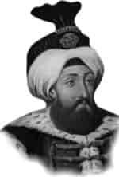

II. SÜLEYMAN
Annesi : Saliha Dilâşub Sultan
Doğumu : 15 Nisan 1642
Vefatı : 22 Haziran 1691
Saltanatı : 1687 - 1691 (4 yıl)
II. Süleyman, İstanbul’da doğdu. Annesi tarafından titizlikle yetiştirildi. Orta boylu, kır sakallı, şişman ve halim selim bir padişahtı.
Padişah olduğu sırada askeri zorbaların ortalığı karıştırması üzerine büyük bir temizliğe girişti. Asayişi kısmen de olsa temin etti.
Devleti çok kötü şartlar içinde iken teslim aldı. IV. Mehmet devrinde Almanların eline geçen birçok yerleri geri aldı. Cesur, dindar, vatansever, merhametli ve nazikti. Rüşvet ve sefahate son derece düşmandı. Köprülü Fazıl Mustafa Paşa’yı büyük muhalefetlere rağmen sadrazam tayin etti. Devrinde Lehistan, Rusya, Almanya ve Venedik’le aynı anda savaşıldı. Lehliler ve Ruslara karşı kesin zafer elde edildi. Venedikliler durduruldu. Almanlardan Belgrad, Sırbistan’ın tamamı, Niş, Vidin ve Semendire tekrar alındı (1690). II. Süleyman, Köprülü Fazıl Mustafa Paşa’yı bu başarılarından sonra İstanbul’a döndüğü zaman sevincinden ağlayarak karşıladı. Bizzat kendi hırkasını çıkarıp ona giydirdi.
1691 ‘de Macaristan fethedilmek üzere yeniden sefere çıkıldı. II. Süleyman, üç yıl yedi ay dört gün padişahlık yaptı. Kırk dokuz yaşını geçiyordu ki, tutulmuş olduğu bir hastalıktan öldü. Ölüm hastası iken İslâm ordusunu Avrupa seferine uğurluyordu. Cenazesi İstanbul’a getirildi ve Kanuni Sultan Süleyman Türbesi’ne defnedildi.
Çocuklarının isimleri bilinmiyor.